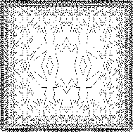

|
As we have seen, pairs provide a primitive “glue” that we can use toconstruct compound data objects.Figure 2.2 shows a standard way tovisualize a pair – in this case, the pair formed by (cons 1 2).In this representation, which is called box-and-pointernotation, each object is shown as a pointer to a box. The boxfor a primitive object contains a representation of the object. Forexample, the box for a number contains a numeral. The box for a pairis actually a double box, the left part containing (a pointer to) thecar of the pair and the right part containing the cdr.
We have already seen that cons can be used to combine notonly numbers but pairs as well. (You made use of this fact, orshould have, in doing exercises 2.2and 2.3.) As a consequence, pairs provide a universalbuilding block from which we can construct all sorts of datastructures. Figure 2.3 shows two waysto use pairs to combine the numbers 1, 2, 3, and 4.
|
 |
The ability to create pairs whose elements are pairs is the essence oflist structure's importance as a representational tool. We refer tothis ability as the closure property of cons. In general,an operation for combining data objects satisfies the closure propertyif the results of combining things with that operation can themselvesbe combined using the same operation.6Closure is the key to power inany means of combination because it permits us to create hierarchical structures – structures made up of parts, whichthemselves are made up of parts, and so on.
From the outset of chapter 1, we've made essential use of closure indealing with procedures, because all but the very simplest programsrely on the fact that the elements of a combination can themselves becombinations. In this section, we take up the consequences of closurefor compound data. We describe some conventional techniques for usingpairs to represent sequences and trees, and we exhibit a graphicslanguage that illustrates closure in a vivid way.7
 |
One of the useful structures we can build with pairs is a sequence – an ordered collection of data objects. There are, ofcourse, many ways to represent sequences in terms of pairs. Oneparticularly straightforward representation is illustrated infigure 2.4, where the sequence 1, 2, 3, 4 isrepresented as a chain of pairs. The car of each pair is thecorresponding item in the chain, and the cdr of the pair isthe next pair in the chain. The cdr of the final pairsignals the end of the sequence by pointing to a distinguishedvalue that is not a pair,represented in box-and-pointer diagrams as a diagonal lineand in programs as the value of the variable nil.The entire sequence is constructed by nested cons operations:
(cons 1 (cons 2 (cons 3 (cons 4 nil))))
Such a sequence of pairs, formed by nested conses, is called alist, and Scheme provides aprimitive called list to help in constructing lists.8The above sequence could be produced by (list 1 2 3 4). Ingeneral,
(list <a1> <a2> ... <an>)
is equivalent to
(cons <a1> (cons <a2> (cons...(cons <an> nil)...)))
Lisp systems conventionally print lists by printing the sequence ofelements, enclosed in parentheses. Thus, the data object infigure 2.4 is printed as (1 2 3 4):
(define one-through-four (list 1 2 3 4)) one-through-four (1 2 3 4)
Be careful not to confuse the expression (list 1 2 3 4) with thelist (1 2 3 4), which is the result obtained when the expressionis evaluated. Attempting to evaluate the expression (1 2 3 4) willsignal an error when the interpreter tries to apply the procedure 1 to arguments 2, 3, and 4.
We can think of car as selecting the first item in the list, andof cdr as selecting the sublist consisting of all but the firstitem. Nested applications of car and cdr can be used toextract the second, third, and subsequent items in thelist.9The constructor cons makes a list like the original one,but with an additional item at the beginning.
(car one-through-four) 1 (cdr one-through-four) (2 3 4) (car (cdr one-through-four)) 2 (cons 10 one-through-four) (10 1 2 3 4) (cons 5 one-through-four) (5 1 2 3 4)
The value of nil, used to terminate the chain of pairs, can bethought of as a sequence of no elements, the empty list. Theword nil is a contraction of the Latin word nihil, whichmeans “nothing.”10
The use of pairs to represent sequences of elements as lists isaccompanied by conventional programming techniques for manipulatinglists by successively “cdring down” the lists. For example,the procedure list-ref takes as arguments a list and a numbern and returns the nth item of the list. It is customary tonumber the elements of the list beginning with 0. The method forcomputing list-ref is the following:
list-ref should return the car of the list.
list-ref should return the (n - 1)st item of thecdr of the list.(define (list-ref items n) (if (= n 0) (car items) (list-ref (cdr items) (- n 1)))) (define squares (list 1 4 9 16 25)) (list-ref squares 3) 16
Often we cdr down the whole list. To aid in this, Scheme includesa primitive predicate null?, which tests whether its argument isthe empty list. The procedure length, whichreturns the number of items in a list, illustrates this typicalpattern of use:
(define (length items) (if (null? items) 0 (+ 1 (length (cdr items))))) (define odds (list 1 3 5 7)) (length odds) 4
The length procedure implements a simple recursive plan. Thereduction step is:
length of any list is 1 plus the length of thecdr of the list.This is applied successively until we reach the base case:
length of the empty list is 0.We could also compute length in an iterative style:
(define (length items) (define (length-iter a count) (if (null? a) count (length-iter (cdr a) (+ 1 count)))) (length-iter items 0))
Another conventional programming technique is to “cons up” ananswer list while cdring down a list, as in the procedure append, which takes two lists as arguments and combines theirelements to make a new list:
(append squares odds) (1 4 9 16 25 1 3 5 7) (append odds squares) (1 3 5 7 1 4 9 16 25)
Append is also implemented using a recursive plan. To appendlists list1 and list2, do the following:
list1 is the empty list, then the result is just list2.
append the cdr of list1 andlist2, and cons the car of list1 onto the result:(define (append list1 list2) (if (null? list1) list2 (cons (car list1) (append (cdr list1) list2))))
Exercise 2.17. Define a procedure last-pair that returns the list that contains onlythe last element of a given (nonempty) list:
(last-pair (list 23 72 149 34)) (34)
Exercise 2.18. Define a procedure reverse that takes a list as argument andreturns a list of the same elements in reverse order:
(reverse (list 1 4 9 16 25)) (25 16 9 4 1)
Exercise 2.19. Consider the change-counting program ofsection 1.2.2. It would be nice to be able toeasily change the currency used by the program, so that we couldcompute the number of ways to change a British pound, for example. Asthe program is written, the knowledge of the currency is distributedpartly into the procedure first-denomination and partly into theprocedure count-change (which knows that there are fivekinds of U.S. coins). It would be nicer to be able tosupply a list of coins to be used for making change.
We want to rewrite the procedure cc so that itssecond argument is a list of the values of thecoins to use rather than an integer specifying which coins to use. Wecould then have lists that defined each kind of currency:
(define us-coins (list 50 25 10 5 1)) (define uk-coins (list 100 50 20 10 5 2 1 0.5))
We could then call cc as follows:
(cc 100 us-coins) 292
To do this will require changing the program cc somewhat. It willstill have the same form, but it will access its second argumentdifferently, as follows:
(define (cc amount coin-values) (cond ((= amount 0) 1) ((or (< amount 0) (no-more? coin-values)) 0) (else (+ (cc amount (except-first-denomination coin-values)) (cc (- amount (first-denomination coin-values)) coin-values)))))
Define the procedures first-denomination, except-first-denomination, and no-more? in terms of primitiveoperations on list structures. Does the order of the list coin-values affect the answer produced by cc? Why or why not?
Exercise 2.20. The procedures +, *, and list take arbitrary numbersof arguments. One way to define such procedures is to use definewith dotted-tail notation. In a procedure definition, a parameterlist that has a dot before the last parameter name indicates that, when theprocedure is called, the initial parameters (if any) will have as valuesthe initial arguments,as usual, but the final parameter's value will be a list ofany remaining arguments.For instance, given the definition
(define (f x y . z) <body>)
the procedure f can be called with two or more arguments.If we evaluate
(f 1 2 3 4 5 6)
then in the body of f, x will be 1, y will be2, and z will be the list (3 4 5 6).Given the definition
(define (g . w) <body>)
the procedure g can be called with zero or more arguments.If we evaluate
(g 1 2 3 4 5 6)
then in the body of g, w will be thelist (1 2 3 4 5 6).11
Use this notationto write a procedure same-parity that takes one or more integersand returns a list of all the arguments that have the same even-oddparity as the first argument. For example,
(same-parity 1 2 3 4 5 6 7) (1 3 5 7) (same-parity 2 3 4 5 6 7) (2 4 6)
One extremely useful operation is to apply some transformationto each element in a list and generate the list of results.For instance, the following procedure scales each number in a list bya given factor:
(define (scale-list items factor) (if (null? items) nil (cons (* (car items) factor) (scale-list (cdr items) factor)))) (scale-list (list 1 2 3 4 5) 10) (10 20 30 40 50)
We can abstract this general idea and capture it as a common patternexpressed as a higher-order procedure, just as insection 1.3. The higher-order procedurehere is called map. Map takes as arguments a procedureof one argumentand a list, and returns a list of the results produced byapplying the procedure to each element in the list:12
(define (map proc items) (if (null? items) nil (cons (proc (car items)) (map proc (cdr items))))) (map abs (list -10 2.5 -11.6 17)) (10 2.5 11.6 17) (map (lambda (x) (* x x)) (list 1 2 3 4)) (1 4 9 16)
Now we can give a new definition of scale-list in terms of map:
(define (scale-list items factor) (map (lambda (x) (* x factor)) items))
Map is an important construct, not only because it captures acommon pattern, but because it establishes a higher level ofabstraction in dealing with lists. In the original definition of scale-list, the recursive structure of the program draws attention tothe element-by-element processing of the list. Defining scale-list in terms of map suppresses that level of detail andemphasizes that scaling transforms a list of elements to a list ofresults. The difference between the two definitions is not that thecomputer is performing a different process (it isn't) but that wethink about the process differently. In effect, map helpsestablish an abstraction barrier that isolates the implementation ofprocedures that transform lists from the details of how theelements of the list are extracted and combined. Like the barriersshown in figure 2.1, this abstraction givesus the flexibility to change the low-level details of how sequencesare implemented, while preserving the conceptual framework ofoperations that transform sequences to sequences.Section 2.2.3 expands on this useof sequences as a framework for organizing programs.
Exercise 2.21. The procedure square-list takes a list ofnumbers as argument and returns a list of the squares of thosenumbers.
(square-list (list 1 2 3 4)) (1 4 9 16)
Here are two different definitions of square-list. Completeboth of them by filling in the missing expressions:
(define (square-list items) (if (null? items) nil (cons <??> <??>))) (define (square-list items) (map <??> <??>))
Exercise 2.22. Louis Reasoner tries to rewrite the first square-list procedure ofexercise 2.21 so that it evolves an iterativeprocess:
(define (square-list items) (define (iter things answer) (if (null? things) answer (iter (cdr things) (cons (square (car things)) answer)))) (iter items nil))
Unfortunately, defining square-list this way produces the answerlist in the reverse order of the one desired. Why?
Louis then tries to fix his bug by interchanging the arguments tocons:
(define (square-list items) (define (iter things answer) (if (null? things) answer (iter (cdr things) (cons answer (square (car things)))))) (iter items nil))
This doesn't work either. Explain.
Exercise 2.23. The procedure for-each is similar to map. It takes asarguments a procedure and a list of elements. However, rather thanforming a list of the results, for-each just applies the procedureto each of the elements in turn, from left to right. The valuesreturned by applying the procedure to the elements are not used atall – for-each is used with procedures that perform an action,such as printing. For example,
(for-each (lambda (x) (newline) (display x)) (list 57 321 88)) 57 321 88
The value returned by the call to for-each (not illustrated above)can be something arbitrary, such as true. Give animplementation of for-each.
The representation of sequences in terms of lists generalizesnaturally to represent sequences whose elements maythemselves be sequences. For example, we can regard the object((1 2) 3 4) constructed by
(cons (list 1 2) (list 3 4))
as a list of three items, the first of which is itself a list, (1 2). Indeed, this is suggested by the form in which the result isprinted by the interpreter. Figure 2.5 showsthe representation of this structure in terms of pairs.
 |
Another way to think of sequences whose elements are sequences is astrees. The elements of the sequence are the branches of thetree, and elements that are themselves sequences are subtrees.Figure 2.6 shows the structure infigure 2.5 viewed as a tree.
 |
Recursion is a natural tool for dealing with tree structures, sincewe can often reduce operations on trees to operations on theirbranches, which reduce in turn to operations on the branches of thebranches, and so on, until we reach the leaves of the tree.As an example, compare the length procedure ofsection 2.2.1 with the count-leaves procedure, whichreturns the total number of leaves of a tree:
(define x (cons (list 1 2) (list 3 4))) (length x) 3 (count-leaves x) 4 (list x x) (((1 2) 3 4) ((1 2) 3 4)) (length (list x x)) 2 (count-leaves (list x x)) 8
To implement count-leaves, recall the recursive plan for computinglength:
Length of a list x is 1 plus length of thecdr of x.
Length of the empty list is 0.Count-leaves is similar. The value for the empty list is the same:
Count-leaves of the empty list is 0.But in the reduction step, where we strip off the car of thelist, we must take into account that the car may itself be atree whose leaves we need to count. Thus, the appropriate reductionstep is
Count-leaves of a tree x is count-leaves of the car of x plus count-leaves of thecdr of x.Finally, by taking cars we reachactual leaves, so we need another base case:
Count-leaves of a leaf is 1.To aidin writing recursive procedures on trees, Scheme provides the primitivepredicate pair?, which tests whether its argument is a pair.Here is the complete procedure:13
(define (count-leaves x) (cond ((null? x) 0) ((not (pair? x)) 1) (else (+ (count-leaves (car x)) (count-leaves (cdr x))))))
Exercise 2.24. Suppose we evaluate the expression (list 1 (list 2 (list 3 4))).Give the result printed by the interpreter, the correspondingbox-and-pointer structure, and the interpretation of this as a tree(as in figure 2.6).
Exercise 2.25. Give combinations of cars and cdrs that will pick 7 fromeach of the following lists:
(1 3 (5 7) 9) ((7)) (1 (2 (3 (4 (5 (6 7))))))
Exercise 2.26. Suppose we define x and y to be two lists:
(define x (list 1 2 3)) (define y (list 4 5 6))
What result is printed by the interpreter in response to evaluatingeach of the following expressions:
(append x y) (cons x y) (list x y)
Exercise 2.27. Modify your reverse procedure of exercise 2.18 toproduce a deep-reverse procedure that takes a list as argumentand returns as its value the list with its elements reversed and withall sublists deep-reversed as well. For example,
(define x (list (list 1 2) (list 3 4))) x ((1 2) (3 4)) (reverse x) ((3 4) (1 2)) (deep-reverse x) ((4 3) (2 1))
Exercise 2.28. Write a procedure fringe that takes as argument a tree(represented as a list) and returns a list whose elements are all theleaves of the tree arranged in left-to-right order. For example,
(define x (list (list 1 2) (list 3 4))) (fringe x) (1 2 3 4) (fringe (list x x)) (1 2 3 4 1 2 3 4)
Exercise 2.29. A binary mobile consists of two branches, a left branch and a rightbranch. Each branch is a rod of a certain length, from which hangseither a weight or another binary mobile. We can represent a binarymobile using compound data by constructing it from two branches (forexample, using list):
(define (make-mobile left right) (list left right))
A branch is constructed from a length (which must be a number)together with a structure, which may be either a number(representing a simple weight) or another mobile:
(define (make-branch length structure) (list length structure))
a. Write the corresponding selectors left-branch andright-branch, which return the branches of a mobile, andbranch-length and branch-structure, which returnthe components of a branch.
b. Using your selectors, define a procedure total-weightthat returns the total weight of a mobile.
c. A mobile is said to be balanced if the torque appliedby its top-left branch is equal to that applied by its top-rightbranch (that is, if the length of the left rod multiplied by theweight hanging from that rod is equal to the corresponding product forthe right side) and if each of the submobiles hanging off its branchesis balanced. Design a predicate that tests whether a binary mobile isbalanced.
d. Suppose we change the representation of mobiles so that theconstructors are
(define (make-mobile left right) (cons left right)) (define (make-branch length structure) (cons length structure))
How much do you need to change your programs to convert to the newrepresentation?
Just as map is a powerful abstraction for dealing with sequences,map together with recursion is a powerful abstraction fordealing with trees. For instance, the scale-treeprocedure, analogous to scale-list ofsection 2.2.1, takes as arguments a numeric factor and atree whose leaves are numbers. It returns a tree of the same shape,where each number is multiplied by the factor.The recursive plan for scale-tree is similar to the one forcount-leaves:
(define (scale-tree tree factor) (cond ((null? tree) nil) ((not (pair? tree)) (* tree factor)) (else (cons (scale-tree (car tree) factor) (scale-tree (cdr tree) factor))))) (scale-tree (list 1 (list 2 (list 3 4) 5) (list 6 7)) 10) (10 (20 (30 40) 50) (60 70))
Another way to implement scale-tree is to regard thetree as a sequence of sub-trees and use map. We mapover the sequence, scaling each sub-tree in turn, and return the listof results. In the base case, where the tree is a leaf, we simplymultiply by the factor:
(define (scale-tree tree factor) (map (lambda (sub-tree) (if (pair? sub-tree) (scale-tree sub-tree factor) (* sub-tree factor))) tree))
Many tree operations can be implemented by similar combinations ofsequence operations and recursion.
Exercise 2.30. Define a procedure square-tree analogous to the square-listprocedure of exercise 2.21. That is, square-list should behave as follows:
(square-tree (list 1 (list 2 (list 3 4) 5) (list 6 7))) (1 (4 (9 16) 25) (36 49))
Define square-tree both directly (i.e., without using anyhigher-order procedures) and also by using map and recursion.
Exercise 2.31. Abstract your answer to exercise 2.30 to produce aprocedure tree-map with the property that square-treecould be defined as
(define (square-tree tree) (tree-map square tree))
Exercise 2.32. We can represent a set as a list of distinct elements, and we canrepresent the set of all subsets of the set as a list of lists. Forexample, if the set is (1 2 3), then the set of all subsets is(() (3) (2) (2 3) (1) (1 3) (1 2) (1 2 3)). Complete thefollowing definition of a procedure that generates the set of subsetsof a set and give a clear explanation of why it works:
(define (subsets s) (if (null? s) (list nil) (let ((rest (subsets (cdr s)))) (append rest (map <??> rest)))))
In working with compound data, we've stressed how data abstractionpermits us to design programs without becoming enmeshed in the detailsof data representations, and how abstraction preserves for us theflexibility to experiment with alternative representations. In thissection, we introduce another powerful design principle for workingwith data structures – the use of conventional interfaces.
In section 1.3 we saw how programabstractions, implemented as higher-order procedures, can capturecommon patterns in programs that deal with numerical data. Ourability to formulate analogous operations for working with compounddata depends crucially on the style in which we manipulate our datastructures. Consider, for example, the following procedure, analogousto the count-leaves procedure of section 2.2.2, whichtakes a tree as argument and computes the sum of the squares of theleaves that are odd:
(define (sum-odd-squares tree) (cond ((null? tree) 0) ((not (pair? tree)) (if (odd? tree) (square tree) 0)) (else (+ (sum-odd-squares (car tree)) (sum-odd-squares (cdr tree))))))
On the surface, this procedure is very different from the followingone, which constructs a list of all the even Fibonacci numbers Fib(k), where k is less than or equal to a given integer n:
(define (even-fibs n) (define (next k) (if (> k n) nil (let ((f (fib k))) (if (even? f) (cons f (next (+ k 1))) (next (+ k 1)))))) (next 0))
Despite the fact that these two procedures are structurally verydifferent, a more abstract description of the two computations revealsa great deal of similarity. The first program
+, starting with 0.The second program
cons, starting with theempty list.A signal-processing engineer would find it natural to conceptualizethese processes in terms of signals flowing through a cascade ofstages, each of which implements part of the program plan, as shown infigure 2.7. In sum-odd-squares, webegin with an enumerator, which generates a “signal”consisting of the leaves of a given tree. This signal is passedthrough a filter, which eliminates all but the odd elements.The resulting signal is in turn passed through a map, which is a“transducer” that applies the square procedure to eachelement. The output of the map is then fed to an accumulator,which combines the elements using +, starting from an initial 0.The plan for even-fibs is analogous.
 |
Unfortunately, the two procedure definitions above fail to exhibit thissignal-flow structure. For instance, if we examine the sum-odd-squares procedure, we find that the enumeration isimplemented partly by the null? and pair? tests and partlyby the tree-recursive structure of the procedure. Similarly, theaccumulation is found partly in the tests and partly in the addition usedin the recursion. In general, there are no distinct parts of eitherprocedure that correspond to the elements in the signal-flowdescription.Our two procedures decompose the computations in a different way,spreading the enumeration over the program and mingling it with themap, the filter, and the accumulation. If we could organize ourprograms to make the signal-flow structure manifest in the procedureswe write, this would increase the conceptual clarity of the resultingcode.
The key to organizing programs so as to more clearly reflect thesignal-flow structure is to concentrate on the “signals” that flowfrom one stage in the process to the next. If we represent thesesignals as lists, then we can use list operations to implement theprocessing at each of the stages. For instance, we can implement themapping stages of the signal-flow diagrams using the mapprocedure from section 2.2.1:
(map square (list 1 2 3 4 5)) (1 4 9 16 25)
Filtering a sequence to select only those elements that satisfy agiven predicate is accomplished by
(define (filter predicate sequence) (cond ((null? sequence) nil) ((predicate (car sequence)) (cons (car sequence) (filter predicate (cdr sequence)))) (else (filter predicate (cdr sequence)))))
For example,
(filter odd? (list 1 2 3 4 5)) (1 3 5)
Accumulations can be implemented by
(define (accumulate op initial sequence) (if (null? sequence) initial (op (car sequence) (accumulate op initial (cdr sequence))))) (accumulate + 0 (list 1 2 3 4 5)) 15 (accumulate * 1 (list 1 2 3 4 5)) 120 (accumulate cons nil (list 1 2 3 4 5)) (1 2 3 4 5)
All that remains to implement signal-flow diagrams is to enumerate thesequence of elements to be processed. For even-fibs, we need togenerate the sequence ofintegers in a given range, which we can do as follows:
(define (enumerate-interval low high) (if (> low high) nil (cons low (enumerate-interval (+ low 1) high)))) (enumerate-interval 2 7) (2 3 4 5 6 7)
To enumerate the leaves of a tree, we can use14
(define (enumerate-tree tree) (cond ((null? tree) nil) ((not (pair? tree)) (list tree)) (else (append (enumerate-tree (car tree)) (enumerate-tree (cdr tree)))))) (enumerate-tree (list 1 (list 2 (list 3 4)) 5)) (1 2 3 4 5)
Now we can reformulate sum-odd-squares and even-fibs as inthe signal-flow diagrams. For sum-odd-squares, we enumerate thesequence of leaves of the tree, filter this to keep only the oddnumbers in the sequence, square each element, and sum the results:
(define (sum-odd-squares tree) (accumulate + 0 (map square (filter odd? (enumerate-tree tree)))))
For even-fibs, we enumerate the integers from 0 to n, generatethe Fibonacci number for each of these integers, filter the resultingsequence to keep only the even elements, and accumulate the resultsinto a list:
(define (even-fibs n) (accumulate cons nil (filter even? (map fib (enumerate-interval 0 n)))))
The value of expressing programs as sequence operations is that thishelps us make program designs that are modular, that is, designs thatare constructed by combining relatively independent pieces. We canencourage modular design by providing a library of standard componentstogether with a conventional interface for connecting the componentsin flexible ways.
Modular construction is a powerful strategy forcontrolling complexity in engineering design. In realsignal-processing applications, for example, designers regularly buildsystems by cascading elements selected from standardized families offilters and transducers. Similarly, sequence operations provide alibrary of standard program elements that we can mix and match. Forinstance, we can reuse pieces from the sum-odd-squares and even-fibs procedures in a program that constructs a list of thesquares of the first n + 1 Fibonacci numbers:
(define (list-fib-squares n) (accumulate cons nil (map square (map fib (enumerate-interval 0 n))))) (list-fib-squares 10) (0 1 1 4 9 25 64 169 441 1156 3025)
We can rearrange the pieces and use them in computing the product ofthe odd integers in a sequence:
(define (product-of-squares-of-odd-elements sequence) (accumulate * 1 (map square (filter odd? sequence)))) (product-of-squares-of-odd-elements (list 1 2 3 4 5)) 225
We can also formulate conventional data-processing applications interms of sequence operations. Suppose we have a sequence of personnelrecords and we want to find the salary of the highest-paid programmer.Assume that we have a selector salary that returns the salary ofa record, and a predicate programmer? that tests if a record isfor a programmer. Then we can write
(define (salary-of-highest-paid-programmer records) (accumulate max 0 (map salary (filter programmer? records))))
These examples give just a hint of the vast range of operations thatcan be expressed as sequence operations.15
Sequences, implemented here as lists, serveas a conventional interface that permits us to combine processingmodules. Additionally, when we uniformly represent structures assequences, we have localized the data-structure dependencies in ourprograms to a small number of sequence operations. By changing these,we can experiment with alternative representations of sequences, whileleaving the overall design of our programs intact. We will exploitthis capability in section 3.5, when we generalize thesequence-processing paradigm to admit infinite sequences.
Exercise 2.33. Fill in the missing expressions to complete the following definitionsof some basic list-manipulation operations as accumulations:
(define (map p sequence) (accumulate (lambda (x y) <??>) nil sequence)) (define (append seq1 seq2) (accumulate cons <??> <??>)) (define (length sequence) (accumulate <??> 0 sequence))
Exercise 2.34. Evaluating a polynomial in x at a given value of x can beformulated as an accumulation. We evaluate the polynomial
anxn + an-1xn-1 + ⋯ + a1x + a0
using a well-known algorithm called Horner's rule, whichstructures the computation as
(⋯ (anx + an-1)x + ⋯ + a1) x + a0
In other words, we start with an, multiply by x, add an-1,multiply by x, and so on, until we reach a0.16Fill in the following template to produce a procedure that evaluates apolynomial using Horner's rule.Assume that the coefficients of thepolynomial are arranged in a sequence, from a0 through an.
(define (horner-eval x coefficient-sequence) (accumulate (lambda (this-coeff higher-terms) <??>) 0 coefficient-sequence))
For example, to compute 1 + 3x + 5x3 + x5 at x = 2 you would evaluate
(horner-eval 2 (list 1 3 0 5 0 1))
Exercise 2.35. Redefine count-leaves from section 2.2.2 as anaccumulation:
(define (count-leaves t) (accumulate <??> <??> (map <??> <??>)))
Exercise 2.36. The procedure accumulate-n is similar to accumulate exceptthat it takes as its third argument a sequence of sequences, which are allassumed to have the same number of elements. It applies thedesignated accumulation procedure to combine all the first elements ofthe sequences, all the second elements of the sequences, and so on, andreturns a sequence of the results. For instance, if s is a sequencecontaining four sequences, ((1 2 3) (4 5 6) (7 8 9) (10 11 12)),then the value of (accumulate-n + 0 s) should be the sequence (22 26 30). Fill in the missing expressionsin the following definition of accumulate-n:
(define (accumulate-n op init seqs) (if (null? (car seqs)) nil (cons (accumulate op init <??>) (accumulate-n op init <??>))))
Exercise 2.37. Suppose we represent vectors v = (vi) as sequences of numbers, andmatrices m = (mij) as sequences of vectors (the rows of the matrix).For example, the matrix
| 1 | 2 | 3 | 4 | ||
| 4 | 5 | 6 | 6 | ||
| 6 | 7 | 8 | 9 |
is represented as the sequence ((1 2 3 4) (4 5 6 6) (6 7 8 9)).With this representation, we can use sequence operations to conciselyexpress the basic matrix and vector operations. These operations(which are described in any book on matrix algebra) are the following:
(dot-product v w) returns the sum ∑iviwi;
(matrix-*-vector m v) returns the vector t, where ti = ∑j mijvj;
(matrix-*-vector m n) returns the matrix p, where pij = ∑k miknkj;
(transpose m) returns the matrix n, where nij = mji.
We can define the dot product as17
(define (dot-product v w) (accumulate + 0 (map * v w)))
Fill in the missing expressions in the following procedures forcomputing the other matrix operations. (The procedure accumulate-n isdefined in exercise 2.36.)
(define (matrix-*-vector m v) (map <??> m)) (define (transpose mat) (accumulate-n <??> <??> mat)) (define (matrix-*-matrix m n) (let ((cols (transpose n))) (map <??> m)))
Exercise 2.38. The accumulate procedure is also known as fold-right,because it combines the first element of the sequence with the resultof combining all the elements to the right. There is also a fold-left, which issimilar to fold-right, exceptthat it combines elements working in the opposite direction:
(define (fold-left op initial sequence) (define (iter result rest) (if (null? rest) result (iter (op result (car rest)) (cdr rest)))) (iter initial sequence))
What are the values of
(fold-right / 1 (list 1 2 3)) (fold-left / 1 (list 1 2 3)) (fold-right list nil (list 1 2 3)) (fold-left list nil (list 1 2 3))
Give a property that op should satisfy to guarantee that fold-right and fold-left will produce the same values for anysequence.
Exercise 2.39. Complete the following definitions of reverse(exercise 2.18) in terms of fold-right and fold-left from exercise 2.38:
(define (reverse sequence) (fold-right (lambda (x y) <??>) nil sequence)) (define (reverse sequence) (fold-left (lambda (x y) <??>) nil sequence))
We can extend the sequence paradigm to include manycomputations that are commonly expressed using nested loops.18Considerthis problem: Given a positive integer n, find all ordered pairs ofdistinct positive integers i and j, where 1< j< i< n, suchthat i + j is prime. For example, if n is 6, then the pairs arethe following:
| i | 2 | 3 | 4 | 4 | 5 | 6 | 6 |
| j | 1 | 2 | 1 | 3 | 2 | 1 | 5 |
| i + j | 3 | 5 | 5 | 7 | 7 | 7 | 11 |
A natural way to organize this computation is to generate the sequenceof all ordered pairs of positive integers less than or equal to n,filter to select those pairs whose sum is prime, andthen, for each pair (i, j) that passes through the filter, produce the triple(i,j,i + j).
Here is a way to generate the sequence of pairs: For each integeri< n, enumerate the integers j<i, and for each such i and jgenerate the pair (i,j). In terms of sequence operations, we mapalong the sequence (enumerate-interval 1 n). For each i inthis sequence, we map along the sequence (enumerate-interval 1 (-i 1)). For each j in this latter sequence, we generate the pair(list i j). This gives us a sequence of pairs for each i.Combining all the sequences for all the i (by accumulating with append) produces the required sequence of pairs:19
(accumulate append nil (map (lambda (i) (map (lambda (j) (list i j)) (enumerate-interval 1 (- i 1)))) (enumerate-interval 1 n)))
The combination of mapping and accumulating with append is so common in thissort of program that we will isolate it as a separate procedure:
(define (flatmap proc seq) (accumulate append nil (map proc seq)))
Now filter this sequence of pairs to find those whose sum is prime. Thefilter predicate is called for each element of the sequence; itsargument is a pair and it must extract the integers from the pair.Thus, the predicate to apply to each element in the sequence is
(define (prime-sum? pair) (prime? (+ (car pair) (cadr pair))))
Finally, generate the sequence of results by mapping over the filteredpairs using the following procedure, which constructs a tripleconsisting of the two elements of the pair along with their sum:
(define (make-pair-sum pair) (list (car pair) (cadr pair) (+ (car pair) (cadr pair))))
Combining all these steps yields the complete procedure:
(define (prime-sum-pairs n) (map make-pair-sum (filter prime-sum? (flatmap (lambda (i) (map (lambda (j) (list i j)) (enumerate-interval 1 (- i 1)))) (enumerate-interval 1 n)))))
Nested mappings are also useful for sequences other than those thatenumerate intervals. Suppose we wish to generate all the permutationsof a set S; that is, all the ways of ordering the items inthe set. For instance, the permutations of {1,2,3} are{1,2,3}, { 1,3,2}, {2,1,3}, { 2,3,1}, { 3,1,2}, and{ 3,2,1}. Here is a plan for generating the permutations of S:For each item x in S, recursively generate the sequence ofpermutations of S - x,20 and adjoinx to the front of each one. This yields, for each x in S, the sequenceof permutations of S that begin with x. Combining thesesequences for all x gives all the permutations of S:21
(define (permutations s) (if (null? s) ; empty set? (list nil) ; sequence containing empty set (flatmap (lambda (x) (map (lambda (p) (cons x p)) (permutations (remove x s)))) s)))
Notice how this strategy reduces the problem of generatingpermutations of S to the problem of generating the permutations ofsets with fewer elements than S. In the terminal case, we work ourway down to the empty list, which represents a set of no elements.For this, we generate (list nil), which is a sequence with oneitem, namely the set with no elements. The remove procedureused in permutations returns all the items in a given sequenceexcept for a given item. This can be expressed as a simple filter:
(define (remove item sequence) (filter (lambda (x) (not (= x item))) sequence))
Exercise 2.40. Define a procedure unique-pairs that, given an integer n,generates the sequence of pairs (i,j) with 1< j< i< n. Use unique-pairs to simplify the definition of prime-sum-pairsgiven above.
Exercise 2.41. Write a procedure to find all orderedtriples of distinct positive integers i, j, and k less than orequal to a given integer n that sum to a given integer s.
| ♕ | |||||||
| ♕ | |||||||
| ♕ | |||||||
| ♕ | |||||||
| ♕ | |||||||
| ♕ | |||||||
| ♕ | |||||||
| ♕ |
The “eight-queens puzzle” asks how to place eight queens on achessboard so that no queen is in check from any other (i.e., no twoqueens are in the same row, column, or diagonal). One possiblesolution is shown in figure 2.8. One way to solve thepuzzle is to work across the board, placing a queen in each column.Once we have placed k - 1 queens, we must place the kth queen in aposition where it does not check any of the queens already on theboard. We can formulate this approach recursively: Assume that wehave already generated the sequence of all possible ways to placek - 1 queens in the first k - 1 columns of the board. For each ofthese ways, generate an extended set of positions by placing a queenin each row of the kth column. Now filter these, keeping onlythe positions for which the queen in the kth column is safe withrespect to the other queens. This produces the sequence of all waysto place k queens in the first k columns. By continuing thisprocess, we will produce not only one solution, but all solutions tothe puzzle.
We implement this solution as a procedure queens, which returnsa sequence of all solutions to the problem of placing n queens on ann× n chessboard. Queens has an internal procedure queen-cols that returns the sequence of all ways to place queens inthe first k columns of the board.
(define (queens board-size) (define (queen-cols k) (if (= k 0) (list empty-board) (filter (lambda (positions) (safe? k positions)) (flatmap (lambda (rest-of-queens) (map (lambda (new-row) (adjoin-position new-row k rest-of-queens)) (enumerate-interval 1 board-size))) (queen-cols (- k 1)))))) (queen-cols board-size))
In this procedure rest-of-queens is a way to place k - 1 queensin the first k - 1 columns, and new-row is a proposed row inwhich to place the queen for the kth column. Complete the programby implementing the representation for sets of board positions,including the procedure adjoin-position, which adjoins a new row-columnposition to a set of positions, and empty-board, whichrepresents an empty set of positions. You must also write theprocedure safe?, which determines for a set of positions,whether the queen in the kth column is safe with respect to theothers. (Note that we need only check whether the new queen issafe – the other queens are already guaranteed safe with respect toeach other.)
Exercise 2.43. Louis Reasoner is having a terrible time doing exercise 2.42. Hisqueens procedure seems to work, but it runs extremely slowly.(Louis never does manage to wait long enough for it to solve even the6× 6 case.) When Louis asks Eva Lu Ator for help, she pointsout that he has interchanged the order of the nested mappings in theflatmap, writing it as
(flatmap (lambda (new-row) (map (lambda (rest-of-queens) (adjoin-position new-row k rest-of-queens)) (queen-cols (- k 1)))) (enumerate-interval 1 board-size))
Explain why this interchange makes the program run slowly. Estimatehow long it will take Louis's program to solve the eight-queenspuzzle, assuming that the program in exercise 2.42 solvesthe puzzle in time T.
This section presents a simple language for drawingpictures that illustrates thepower of data abstraction and closure,and also exploits higher-order procedures inan essential way. The languageis designed to make it easy to experiment with patternssuch as the ones in figure 2.9, which arecomposed of repeated elements that are shifted and scaled.22 In this language,the data objects being combinedare represented as procedures rather than as list structure.Just as cons, which satisfies the closure property,allowed us to easily build arbitrarily complicatedlist structure, the operations in this language, which alsosatisfy the closure property, allow us to easily buildarbitrarily complicated patterns.
|
  |
When we began our study of programming insection 1.1, we emphasized theimportance of describing a language by focusing on the language'sprimitives, its means of combination, and its means of abstraction.We'll follow that framework here.
Part of the elegance of this picture language is that there isonly one kind of element, called a painter. A painterdraws an image that is shifted and scaled to fit within a designatedparallelogram-shaped frame. For example, there's a primitive painterwe'll call wave that makes a crude line drawing, asshown in figure 2.10.The actual shape of the drawing depends on the frame – allfour images in figure 2.10 are produced by the same wave painter, but with respect to four different frames. Painterscan be more elaborate than this:The primitivepainter called rogers paints a picture of MIT's founder,William Barton Rogers, as shown in figure 2.11.23The four images in figure 2.11are drawn with respect to the same four framesas the wave images in figure 2.10.
To combine images,we use various operations that construct new paintersfrom given painters.For example, the beside operation takes two painters and produces a new,compound painter that draws the first painter's image in the left halfof the frame and the second painter's image in the right half of the frame.Similarly, below takes two painters and produces a compoundpainter that draws the first painter's image below the secondpainter's image.Some operations transform a single painter to producea new painter. For example, flip-vert takes a painter andproduces a painter that draws its image upside-down, andflip-horiz produces a painter that draws the originalpainter's image left-to-right reversed.
    |
    |
Figure 2.12 shows the drawing of a painter calledwave4 that is built up in two stages starting from wave:
(define wave2 (beside wave (flip-vert wave))) (define wave4 (below wave2 wave2))
  (define wave2 (define wave4 (beside wave (flip-vert wave))) (below wave2 wave2)) |
In building up a complex image in this manner we are exploiting thefact that painters are closed under the language's means ofcombination. The beside or below of two painters isitself a painter; therefore, we can use it as an element in makingmore complex painters. As with building up list structure using cons, the closure of our data under the means of combination iscrucial to the ability to create complex structures while using only afew operations.
Once we can combine painters, we would like to be able to abstracttypical patterns of combining painters.We will implement the painter operations as Scheme procedures.This means that we don't need a special abstraction mechanismin the picture language:Since the means of combinationare ordinary Scheme procedures, we automatically have the capabilityto do anything with painter operations that we can do withprocedures.For example, we can abstract the pattern in wave4 as
(define (flipped-pairs painter) (let ((painter2 (beside painter (flip-vert painter)))) (below painter2 painter2)))
and define wave4 as an instance of this pattern:
(define wave4 (flipped-pairs wave))
We can also define recursive operations.Here's one that makes painters split and branchtowards the right as shown in figures 2.13and 2.14:
(define (right-split painter n) (if (= n 0) painter (let ((smaller (right-split painter (- n 1)))) (beside painter (below smaller smaller)))))
  right-split n corner-split n |
We can produce balanced patterns by branching upwardsas well as towards the right (see exercise 2.44and figures 2.13 and 2.14):
(define (corner-split painter n) (if (= n 0) painter (let ((up (up-split painter (- n 1))) (right (right-split painter (- n 1)))) (let ((top-left (beside up up)) (bottom-right (below right right)) (corner (corner-split painter (- n 1)))) (beside (below painter top-left) (below bottom-right corner))))))
  (right-split wave 4) (right-split rogers 4)   (corner-split wave 4) (corner-split rogers 4) |
By placing four copies of a corner-splitappropriately, we obtain a pattern called square-limit, whoseapplication to wave and rogers is shown infigure 2.9:
(define (square-limit painter n) (let ((quarter (corner-split painter n))) (let ((half (beside (flip-horiz quarter) quarter))) (below (flip-vert half) half))))
Exercise 2.44. Define the procedure up-split used by corner-split.It is similar to right-split, except that it switches theroles of below and beside.
In addition to abstracting patterns of combining painters, we can workat a higher level, abstracting patterns of combining painter operations.That is, we can view the painter operations as elements to manipulateand can write means of combination for these elements – procedures thattake painter operations as arguments and create new painter operations.
For example, flipped-pairs and square-limit eacharrange four copies of a painter's image in a square pattern; they differonly in how they orient the copies.One way to abstract this pattern of painter combination is withthe following procedure, which takes four one-argument painter operationsand produces a painter operation that transforms a givenpainter with those four operations and arranges the results in a square.Tl, tr, bl, and br are thetransformations to apply to the top left copy, the top right copy,the bottom left copy, and the bottom right copy, respectively.
(define (square-of-four tl tr bl br) (lambda (painter) (let ((top (beside (tl painter) (tr painter))) (bottom (beside (bl painter) (br painter)))) (below bottom top))))
Then flipped-pairs can be defined in termsof square-of-four as follows:24
(define (flipped-pairs painter) (let ((combine4 (square-of-four identity flip-vert identity flip-vert))) (combine4 painter)))
and square-limit can be expressed as25
(define (square-limit painter n) (let ((combine4 (square-of-four flip-horiz identity rotate180 flip-vert))) (combine4 (corner-split painter n))))
Exercise 2.45. Right-split and up-split can be expressed asinstances of a general splitting operation.Define a procedure split with the property that evaluating
(define right-split (split beside below)) (define up-split (split below beside))
produces procedures right-split and up-split with the samebehaviors as the ones already defined.
Before we can show how to implement painters and theirmeans of combination, we must first considerframes. A frame can be described by three vectors – an origin vectorand two edge vectors. The origin vector specifies the offset of theframe's origin from some absolute origin in the plane, and the edgevectors specify the offsets of the frame's corners from its origin.If the edges are perpendicular, the frame will be rectangular.Otherwise the frame will be a more general parallelogram.
Figure 2.15 shows a frame and its associated vectors. Inaccordance with data abstraction, we need not bespecific yet about how frames are represented, other than to say thatthere is a constructor make-frame, which takes three vectors andproduces a frame, and three corresponding selectors origin-frame, edge1-frame, and edge2-frame (seeexercise 2.47).
 |
We will use coordinates in the unit square (0< x,y< 1)to specify images.With each frame, we associate a frame coordinate map, whichwill be used to shift and scale images to fit the frame. The maptransforms the unit square into the frame bymapping the vector v = (x,y) to the vector sum

For example, (0,0) is mapped to the origin of the frame, (1,1) tothe vertex diagonally opposite the origin, and (0.5,0.5) to thecenter of the frame. We can create a frame's coordinate map with thefollowing procedure:26
(define (frame-coord-map frame) (lambda (v) (add-vect (origin-frame frame) (add-vect (scale-vect (xcor-vect v) (edge1-frame frame)) (scale-vect (ycor-vect v) (edge2-frame frame))))))
Observe that applying frame-coord-map to a frame returnsa procedure that, given a vector, returns a vector.If the argument vector is in the unit square, the result vectorwill be in the frame. For example,
((frame-coord-map a-frame) (make-vect 0 0))
returns the same vector as
(origin-frame a-frame)
Exercise 2.46. A two-dimensional vector v running from the origin to a pointcan be represented as a pairconsisting of an x-coordinate and a y-coordinate. Implement a dataabstraction for vectors by giving a constructor make-vect andcorresponding selectors xcor-vect and ycor-vect. Interms of your selectors and constructor, implement procedures add-vect, sub-vect, and scale-vect that performthe operations vector addition, vector subtraction, and multiplying avector by a scalar:
(x1, y1) + (x2, y2) = (x1 + x2, y1 + y2) (x1, y1) - (x2, y2) = (x1 - x2, y1 - y2) s · (x, y) = (sx, sy)
Exercise 2.47. Here are two possible constructors for frames:
(define (make-frame origin edge1 edge2) (list origin edge1 edge2)) (define (make-frame origin edge1 edge2) (cons origin (cons edge1 edge2)))
For each constructor supply the appropriate selectors to produce animplementation for frames.
A painter is represented as a procedure that, given a frameas argument, draws a particular image shifted and scaled to fit the frame.That is to say, if p is a painter and f is a frame, then weproduce p's image in f by calling p with f asargument.
The details of how primitive painters are implemented depend on theparticular characteristics of the graphics system and the type ofimage to be drawn. For instance, suppose we have a procedure draw-line that draws a line on the screen between two specifiedpoints. Then we can create painters for line drawings, such as thewave painter in figure 2.10, from lists of linesegments as follows:27
(define (segments->painter segment-list) (lambda (frame) (for-each (lambda (segment) (draw-line ((frame-coord-map frame) (start-segment segment)) ((frame-coord-map frame) (end-segment segment)))) segment-list)))
The segments are given using coordinates with respect to the unitsquare. For each segment in the list, the painter transforms thesegment endpoints with the frame coordinate map and draws a linebetween the transformed points.
Representing painters as procedures erects a powerful abstractionbarrier in the picture language. We can create and intermixall sorts of primitive painters, based on a variety of graphicscapabilities. The details of their implementation do not matter. Anyprocedure can serve as a painter, provided that it takes a frame asargument and draws something scaled to fit the frame.28
Exercise 2.48. A directed line segment in theplane can be represented as a pair of vectors – thevector running from the origin to the start-point of the segment, andthe vector running from the origin to the end-point of the segment.Use your vector representation from exercise 2.46 todefine a representation for segments with a constructor make-segment and selectors start-segment and end-segment.
Exercise 2.49. Use segments->painter to define the following primitive painters:
a. The painter that draws the outline of the designated frame.
b. The painter that draws an “X” by connecting opposite corners ofthe frame.
c. The painter that draws a diamond shape by connecting the midpoints ofthe sides of the frame.
d. The wave painter.
An operation on painters (such as flip-vert or beside)works by creating a painter that invokes the original painterswith respect to frames derived from the argument frame.Thus, for example, flip-vert doesn't have to know how a painterworks in order to flip it – it just has to know how to turn a frameupside down:The flipped painter just uses the original painter,but in the inverted frame.
Painter operations are based onthe procedure transform-painter, which takes as arguments a painter andinformation on how to transform a frame andproduces a new painter. The transformed painter, when called on a frame,transforms the frame andcalls the original painter on the transformed frame.The arguments to transform-painter are points (represented as vectors)that specify the corners of the new frame:When mapped intothe frame, the first point specifies the new frame's originand the other two specify the ends of its edge vectors.Thus, arguments within theunit square specify a frame contained within the original frame.
(define (transform-painter painter origin corner1 corner2) (lambda (frame) (let ((m (frame-coord-map frame))) (let ((new-origin (m origin))) (painter (make-frame new-origin (sub-vect (m corner1) new-origin) (sub-vect (m corner2) new-origin)))))))
Here's how to flip painter images vertically:
(define (flip-vert painter) (transform-painter painter (make-vect 0.0 1.0) ; neworigin(make-vect 1.0 1.0) ; new end ofedge1(make-vect 0.0 0.0))) ; new end ofedge2
Using transform-painter, we can easily define new transformations.For example, we can define a painter that shrinks its image to theupper-right quarter of the frame it is given:
(define (shrink-to-upper-right painter) (transform-painter painter (make-vect 0.5 0.5) (make-vect 1.0 0.5) (make-vect 0.5 1.0)))
Other transformations rotate images counterclockwise by 90 degrees29
(define (rotate90 painter) (transform-painter painter (make-vect 1.0 0.0) (make-vect 1.0 1.0) (make-vect 0.0 0.0)))
or squash images towards the center of the frame:30
(define (squash-inwards painter) (transform-painter painter (make-vect 0.0 0.0) (make-vect 0.65 0.35) (make-vect 0.35 0.65)))
Frame transformation is also the key todefining means of combining two or more painters.The beside procedure,for example, takes two painters, transforms themto paint in the left and right halves of an argument frame respectively,and produces a new, compound painter.When the compound painter is given a frame, itcalls the first transformed painter to paint in the left half ofthe frame and calls the second transformed painter to paint in theright half of the frame:
(define (beside painter1 painter2) (let ((split-point (make-vect 0.5 0.0))) (let ((paint-left (transform-painter painter1 (make-vect 0.0 0.0) split-point (make-vect 0.0 1.0))) (paint-right (transform-painter painter2 split-point (make-vect 1.0 0.0) (make-vect 0.5 1.0)))) (lambda (frame) (paint-left frame) (paint-right frame)))))
Observe how the painter data abstraction, and in particular therepresentation of painters as procedures, makes beside easy toimplement. The beside procedure need not know anythingabout the details of the component painters other than that eachpainter will draw something in its designated frame.
Exercise 2.50. Define the transformation flip-horiz, which flipspainters horizontally, and transformations that rotatepainters counterclockwise by 180 degrees and 270 degrees.
Exercise 2.51. Define the below operation for painters. Below takes twopainters as arguments. The resulting painter, given a frame,draws with the first painter in thebottom of the frame and with the second painter in the top. Define below in two different ways – first by writing a procedure that isanalogous to the beside procedure given above, andagain in terms of beside and suitablerotation operations (from exercise 2.50).
The picture language exercises some of the critical ideaswe've introduced about abstraction with procedures and data. Thefundamental data abstractions, painters, are implemented usingprocedural representations, which enables the language tohandle different basic drawing capabilities in a uniform way. Themeans of combination satisfy the closure property, which permits us toeasily build up complex designs. Finally, all the tools forabstracting procedures are available to us for abstracting means ofcombination for painters.
We have also obtained a glimpse of another crucial idea aboutlanguages and program design. This is the approach of stratifieddesign, the notion that a complex system should be structured as asequence of levels that are described using a sequence of languages.Each level is constructed by combining parts that are regarded asprimitive at that level, and the parts constructed at each level areused as primitives at the next level. The language used at each levelof a stratified design has primitives, means of combination, and meansof abstraction appropriate to that level of detail.
Stratified design pervades the engineering of complex systems. Forexample, in computer engineering, resistors and transistors arecombined (and described using a language of analog circuits) toproduce parts such as and-gates and or-gates, which form theprimitives of a language for digital-circuit design.31These parts are combined to buildprocessors, bus structures, and memory systems, which are in turncombined to form computers, using languages appropriate to computerarchitecture. Computers are combined to form distributed systems,using languages appropriate for describing network interconnections,and so on.
As a tiny example of stratification, our picture language usesprimitive elements (primitive painters) that are created using alanguage that specifies points and lines to provide the lists of linesegments for segments->painter, or theshading details for a painter like rogers. The bulk of ourdescription of the picture language focused on combining theseprimitives, using geometric combiners such as beside and below. We also worked at a higher level, regarding beside andbelow as primitives to be manipulated in a language whoseoperations, such as square-of-four, capture common patterns ofcombining geometric combiners.
Stratified design helps make programs robust, that is, it makesit likely that small changes in a specification will requirecorrespondingly small changes in the program. For instance, supposewe wanted to change the image based on wave shown infigure 2.9. We could work at the lowest levelto change the detailed appearance of the wave element; we couldwork at the middle level to change the way corner-splitreplicates the wave; we could work at the highest level tochange how square-limit arranges the four copies of the corner.In general, each level of a stratified design provides a differentvocabulary for expressing the characteristics of the system, and adifferent kind of ability to change it.
Exercise 2.52. Make changes to the square limit of wave shown infigure 2.9 by working at each of the levelsdescribed above. In particular:
a. Add some segments to the primitive wave painterof exercise 2.49 (to add a smile, for example).
b. Change the pattern constructed by corner-split(for example, by using only one copy of theup-split and right-split images instead of two).
c. Modify the version of square-limit that uses square-of-fourso as to assemble the corners in a different pattern. (For example, youmight make the big Mr. Rogers look outward from each corner of the square.)
6 The use of the word “closure” here comes from abstract algebra,where a set of elements is said to be closed under an operation ifapplying the operation to elements in the set produces an element thatis again an element of the set. The Lisp communityalso (unfortunately) uses the word “closure” to describe a totally unrelatedconcept: A closure is an implementation technique for representingprocedures with free variables. We do not use the word “closure” inthis second sense in this book.
7 The notion that a means ofcombination should satisfy closure is a straightforward idea.Unfortunately, the data combiners provided in many popular programminglanguages do not satisfy closure, or make closure cumbersome toexploit. In Fortran or Basic, one typically combines data elements byassembling them into arrays – but one cannot form arrays whoseelements are themselves arrays. Pascal and C admit structures whoseelements are structures. However, this requires that the programmermanipulate pointers explicitly, and adhere to the restriction thateach field of a structure can contain only elements of a prespecified form.UnlikeLisp with its pairs, these languages have no built-in general-purposeglue that makes it easy to manipulate compound data in a uniform way.This limitation lies behind Alan Perlis's comment in his foreword tothis book: “In Pascal the plethora of declarable data structuresinduces a specialization within functions that inhibits and penalizescasual cooperation. It is better to have 100 functions operate on onedata structure than to have 10 functions operate on 10 datastructures.”
8 In this book, we use list to mean a chain ofpairs terminated by the end-of-list marker. In contrast, the termlist structure refers to any data structure made out of pairs,not just to lists.
9 Since nested applications of car and cdrare cumbersome to write, Lisp dialects provide abbreviations forthem – for instance,
(cadr ⟨arg⟩) = (car (cdr ⟨arg⟩))
The names of all such procedures start with c and end with r. Each a between them stands for a car operation andeach d for a cdr operation, to be applied in the same orderin which they appear in the name. The names car and cdrpersist because simple combinations like cadr arepronounceable.
10 It's remarkable how much energy in thestandardization of Lisp dialects has been dissipated in arguments thatare literally over nothing: Should nil be an ordinary name?Should the value of nil be a symbol? Should it be a list?Should it be a pair? In Scheme, nil is an ordinary name,which we use in this section as a variable whose value isthe end-of-list marker (just as true is an ordinary variablethat has a true value). Other dialects ofLisp, including Common Lisp, treat nil as a special symbol. Theauthors of this book, who have endured too many languagestandardization brawls, would like to avoid the entire issue. Once wehave introduced quotation in section 2.3, we willdenote the empty list as '() and dispense with thevariable nil entirely.
11 To define f and g usinglambda we would write
(define f (lambda (x y . z) <body>)) (define g (lambda w <body>))
12 Schemestandardly provides a map procedure that is more generalthan the one described here.This more general maptakes a procedure of n arguments, together with n lists, andapplies the procedure to all the first elements ofthe lists, all the second elements of the lists, and so on,returning a list of the results. For example:
(map + (list 1 2 3) (list 40 50 60) (list 700 800 900)) (741 852 963) (map (lambda (x y) (+ x (* 2 y))) (list 1 2 3) (list 4 5 6)) (9 12 15)
13 The order of thefirst two clauses in the cond matters, since the empty listsatisfies null? and also is not a pair.
14 This is, in fact, precisely the fringe procedure fromexercise 2.28. Here we've renamed it to emphasize thatit is part of a family of general sequence-manipulation procedures.
15 Richard Waters (1979)developed a program that automatically analyzes traditional Fortranprograms, viewing them in terms of maps, filters, and accumulations.He found that fully 90 percent of the code in the Fortran ScientificSubroutine Package fits neatly into this paradigm. One of the reasonsfor the success of Lisp as a programming language is that listsprovide a standard medium for expressing ordered collections so thatthey can be manipulated using higher-order operations. Theprogramming language APL owes much of its power and appeal to asimilar choice. In APL all data are represented as arrays, and there is auniversal and convenient set of generic operators for all sorts ofarray operations.
16 According to Knuth (1981), this rule was formulated byW. G. Horner early in the nineteenth century, but the method wasactually used by Newton over a hundred years earlier. Horner's ruleevaluates the polynomial using fewer additions and multiplicationsthan does the straightforward method of first computing anxn,then adding an-1xn-1, and so on. In fact, it is possible toprove that any algorithm for evaluating arbitrary polynomials must useat least as many additions and multiplications as does Horner's rule,and thus Horner's rule is an optimal algorithm for polynomialevaluation. This was proved (for the number of additions) byA. M. Ostrowski in a 1954 paper that essentially founded the modernstudy of optimal algorithms. The analogous statement formultiplications was proved by V. Y. Pan in 1966. The book by Borodinand Munro (1975) provides an overview of these and other results aboutoptimal algorithms.
17 This definition uses theextended version of map described in footnote 12.
18 This approach to nested mappings was shownto us by David Turner, whose languages KRC and Miranda provide elegantformalisms for dealing with these constructs. The examples in thissection (see also exercise 2.42) are adapted from Turner1981. In section 3.5.3, we'll see how thisapproach generalizes to infinite sequences.
19 We'rerepresenting a pair here as a list of two elements rather than as aLisp pair. Thus, the “pair” (i,j) is represented as (list ij), not (cons i j).
20 The set S - x is the set of all elementsof S, excluding x.
21 Semicolons in Scheme code are used tointroduce comments. Everything from the semicolon to the end ofthe line is ignored by the interpreter. In this book we don't usemany comments; we try to make our programs self-documenting by usingdescriptive names.
22 The picture language is based on the languagePeter Henderson created to constructimages like M.C. Escher's “Square Limit” woodcut (see Henderson 1982).The woodcut incorporates arepeated scaled pattern, similar to the arrangements drawn usingthe square-limit procedure in this section.
23 William Barton Rogers (1804-1882) was the founder and first presidentof MIT. A geologist and talented teacher, he taught at William andMary College and at the University of Virginia. In 1859 he moved toBoston, where he had more time for research, worked on a planfor establishing a “polytechnic institute,” and served asMassachusetts's first State Inspector of Gas Meters.
When MIT was established in 1861, Rogers was elected its firstpresident. Rogers espoused an ideal of “useful learning” that wasdifferent from the university education of the time, with itsoveremphasis on the classics, which, as he wrote, “stand in the way ofthe broader, higher and more practical instruction and discipline ofthe natural and social sciences.” This education was likewise to bedifferent from narrow trade-school education. In Rogers's words:
The world-enforced distinction between the practical and thescientific worker is utterly futile, and the whole experience ofmodern times has demonstrated its utter worthlessness.
Rogers served as president of MIT until 1870, when he resigned due toill health. In 1878 the second president of MIT, John Runkle,resigned under the pressure of a financial crisis brought on by thePanic of 1873 and strain of fighting off attempts by Harvard to takeover MIT. Rogers returned to hold the office of president until1881.
Rogers collapsed and died while addressing MIT's graduating class atthe commencement exercises of 1882. Runkle quoted Rogers's lastwords in a memorial address delivered that same year:
In the words of Francis A. Walker(MIT's third president):“As I stand here today and see what the Institute is,
...I callto mind the beginnings of science. I remember one hundred and fiftyyears ago Stephen Hales published a pamphlet on the subject ofilluminating gas, in which he stated that his researches haddemonstrated that 128 grains of bituminous coal – ”“Bituminous coal,” these were his last words on earth. Here he bentforward, as if consulting some notes on the table before him, thenslowly regaining an erect position, threw up his hands, and wastranslated from the scene of his earthly labors and triumphs to “thetomorrow of death,” where the mysteries of life are solved, and thedisembodied spirit finds unending satisfaction in contemplating thenew and still unfathomable mysteries of the infinite future.
All his life he had borne himself most faithfully and heroically, andhe died as so good a knight would surely have wished, in harness, athis post, and in the very part and act of public duty.
24 Equivalently, we couldwrite
(define flipped-pairs (square-of-four identity flip-vert identity flip-vert))
25 Rotate180rotates a painter by 180 degrees (see exercise 2.50).Instead of rotate180 we could say (compose flip-vert flip-horiz), usingthe compose procedure from exercise 1.42.
26 Frame-coord-map usesthe vector operations described in exercise 2.46 below, which weassume have been implemented using some representation for vectors.Because of data abstraction, it doesn't matter what this vectorrepresentation is, so long as the vector operations behave correctly.
27 Segments->painter uses the representation for linesegments described in exercise 2.48 below.It also uses the for-each procedure described in exercise 2.23.
28 For example, the rogers painter offigure 2.11 was constructed from a gray-level image.For each point in a given frame,the rogers painter determines the point in the image that is mapped to itunder the frame coordinate map, and shades itaccordingly. By allowing different types of painters, we are capitalizing on theabstract data idea discussed in section 2.1.3, where weargued that a rational-number representation could be anything at all thatsatisfies an appropriate condition. Here we're using the fact that apainter can be implemented in any way at all, so long as it drawssomething in the designated frame. Section 2.1.3 alsoshowed how pairs could be implemented as procedures. Painters are oursecond example of a procedural representation for data.
29 Rotate90 is a pure rotation only for squareframes, because it also stretches and shrinks the image to fit intothe rotated frame.
30 The diamond-shaped images in figures 2.10and 2.11 were created with squash-inwards applied towave and rogers.